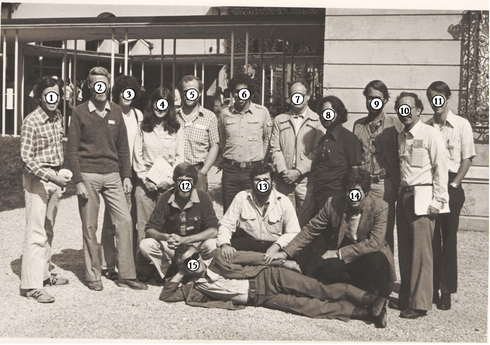

Picture of the 1981 Tutzing Meeting.
Thanks to Stephen Alexander (number 14) for contributing the picture.
|
Hide legend - View names in a new window |
| 1. James Morrissey 2. Peter Newell 3. Fiona Ross 4. Isabel Mullins 5. Stuart McRobbie 6. Ed Berger 7. Herbert Ennis 8. Karl Saxe 9. William Loomis 10. Eugene Katz 11. Randall Diamond 12. Jakob Franke 13. Richard Kessin 14. Stephen Alexander 15. Maurice Sussman |